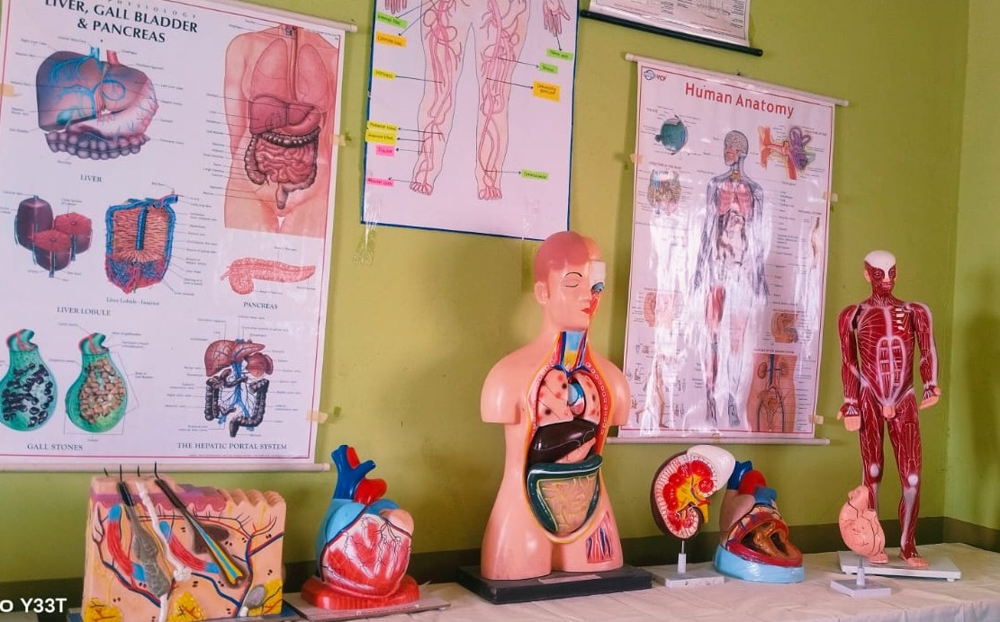
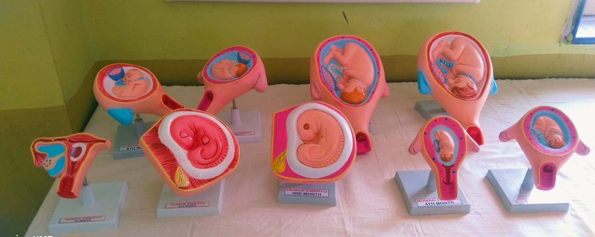
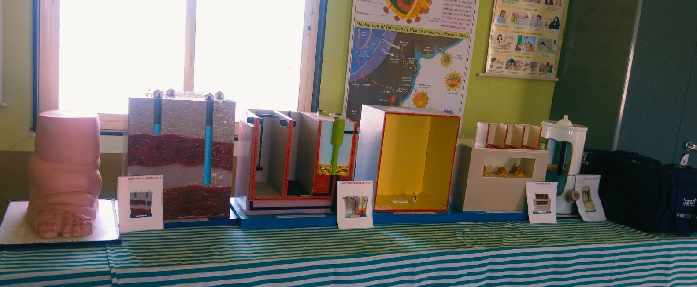
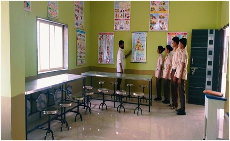
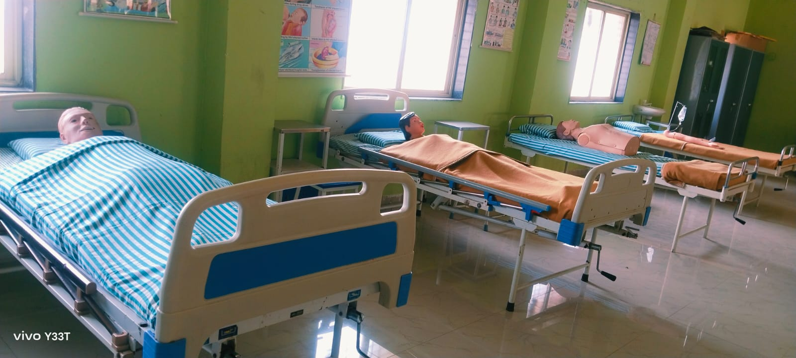

Fundamentals of Nursing Laboratory
This laboratory is well equipped with all the surgical instruments, articles, glassware’s, rubber goods, and manikins such as adult male / female for demonstrating nursing procedures. Students are exposed to developing skills by practicing procedures in the demonstration room under the able guidance of nursing faculty. This laboratory develops the basic and advanced skills required for a nurse in delivery of patient care.

Maternal & Child Health Laboratory
MCH Laboratory enables the students to develop skills required for caring for women with gynaecological problems, providing obstetric care throughout pregnancy as well as preparing nurses in various pediatric procedures. The laboratory is well equipped with a female pelvis, foetal skull, and a delivery manikin. A delivery kit is also available for conducting home deliveries.

Community Health Nursing Laboratory
Community Health Nursing Laboratory prepares the students to provide care to families in a community setting. The lab enables the students to develop skills using a home-based approach with community bags, tools for treating minor ailments, and audiovisual aids for health education delivery.

Nutrition Laboratory
Students learn the principles of food preparation, nutritious recipes, and methods of cooking & serving. They are trained to calculate nutritive values and prepare menus for normal and therapeutic diets in an economical way, focusing on community needs and low-cost ingredients.

Advance Nursing Lab
This is an extension of the nursing foundation lab with high-fidelity simulation manikins to stimulate critical thinking. The lab also has various manikins to help students practice IV line insertion, PICC line handling, and suturing techniques.

Computer Lab
The Computer Lab has LAN/Wi-Fi connection, and an internet cable connection is also available. There are exclusive computer set up in the library for the students and faculty for their use. The students are provided free usage of the computers and internet for their curricular submissions.